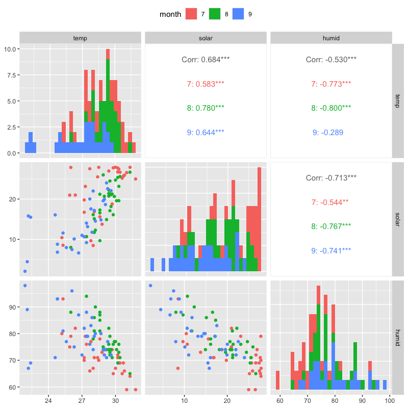

データの可視化
第5講 - 様々なグラフの描画
(Press ? for help, n and p for next and previous slide)
講義の内容
- 可視化の重要性
- 基本的な描画
- いろいろな分布の視覚化
- 比率の視覚化
- 多次元データの視覚化
可視化の重要性
データの可視化
- データ全体の特徴や傾向を把握するための直感的で効果的な方法
- R言語には極めて多彩な作図機能が用意されている
- base R :
package::graphics(標準で読み込まれる) - tidyverse :
package::ggplot2
- base R :
- 描画関連の関数は色， 線種や線の太さ， 図中の文字の大きさなどを指定することができる
tidyverse パッケージ
- データ操作とグラフィクスの拡張 (再掲)
- tidyverse : Hadley Wickham @posit による拡張パッケージ集
パッケージ集の利用には以下が必要
#' 最初に一度だけ以下のいずれかを実行しておく #' - Package タブから tidyverse をインストール #' - コンソール上で次のコマンドを実行 'install.packages("tidyverse")' #' tidyverse パッケージの読み込み library(tidyverse)
- グラフィクスの拡張である
ggplot2を利用
サンプルデータの説明
jpdata[1-3].csv(再掲)- https://www.e-stat.go.jp (統計局)
- 地域から探す / 全県を選択 / 項目を選択してダウンロード
- 日本語が扱えることを想定して日本語を含んでいる
- 英語のために -en を用意
- データファイル (文字コード : utf8)
- jpdata1.csv : 県別の対象データ
- jpdata2.csv : 対象データの内容説明
- jpdata3.csv : 県と地域の対応関係
作業ディレクトリのdata内に置いて読み込む場合
jp_data <- read_csv(file = "data/jpdata1.csv") jp_item <- read_csv(file = "data/jpdata2.csv") jp_area <- read_csv(file = "data/jpdata3.csv")
- 変数名は自由に付けてよい
- https://www.e-stat.go.jp (統計局)
tokyo_weather.csv(tokyo.zipの中)- https://www.jma.go.jp (気象庁)
- 各種データ・資料 / 過去の地点気象データ・ダウンロード
- 地点 / 項目 / 期間を選択してダウンロード
- ダウンロードしたものを必要事項のみ残して整理
- データ項目 平均気温(℃),降水量の合計(mm),合計全天日射量(MJ/㎡),降雪量合計(cm),最多風向(16方位),平均風速(m/s),平均現地気圧(hPa),平均湿度(％),平均雲量(10分比),天気概況(昼：06時〜18時),天気概況(夜：18時〜翌日06時)
作業ディレクトリのdata内に置いて読み込む場合
tw_data <- read_csv(file = "data/tokyo_weather.csv")
- https://www.jma.go.jp (気象庁)
tokyo_covid19_2021.csv(tokyo.zipの中)- https://www.hokeniryo.metro.tokyo.lg.jp/kansen/info/corona/corona_portal (東京都)
- データ項目 陽性者数, 総検査実施件数, 発熱等相談件数
作業ディレクトリのdata内に置いて読み込む場合
tc_data <- read_csv(file="data/tokyo_covid19_2021.csv")
描画の基礎
描画の初期化
package::ggplot2ではさまざまな作図関数を演算子+で追加しながら描画する初期化のための関数 + 作図のための関数 + ... + 装飾のための関数 + ... # 関数が生成するオブジェクトに変更分を随時追加する
関数
ggplot2::ggplot(): 初期化ggplot(data = NULL, mapping = aes(), ..., environment = parent.frame()) #' data: データフレーム #' mapping: 描画の基本となる"審美的マップ"(xy軸，色，形，塗り潰しなど)の設定 #' environment: 互換性のための変数(廃止) #' 詳細は '?ggplot2::ggplot' を参照
折線グラフ
関数
ggplot2::geom_line(): 線の描画geom_line( mapping = NULL, data = NULL, stat = "identity", position = "identity", ..., na.rm = FALSE, orientation = NA, show.legend = NA, inherit.aes = TRUE ) #' mapping: "審美的"マップの設定 #' data: データフレーム #' stat: 統計的な処理の指定 #' position: 描画位置の調整 #' ...: その他の描画オプション #' na.rm: NA(欠損値)の削除(既定値は削除しない) #' show.legend: 凡例の表示(既定値は表示) #' 詳細は '?ggplot2::geom_line' を参照
東京の5月の気温と日射量の推移
tw_data |> filter(month == 5) |> # 5月を抽出 ggplot(aes(x = day)) + # day をx軸に指定 geom_line(aes(y = temp), colour = "blue") + # 気温を青 geom_line(aes(y = solar), colour = "red") + # 日射量を赤 labs(y = "temp.(blue) / solar rad.(red)") # y軸のラベルを変更

データフレームの形の変更
関数
dplyr::pivot_longer(): 列の集約pivot_longer( data, cols, ..., cols_vary = "fastest", names_to = "name", names_prefix = NULL, names_sep = NULL, names_pattern = NULL, names_ptypes = NULL, names_transform = NULL, names_repair = "check_unique", values_to = "value", values_drop_na = FALSE, values_ptypes = NULL, values_transform = NULL ) #' data: データフレーム #' cols: 操作の対象とする列(列の番号，名前，名前に関する条件式など) #' names_to: 対象の列名をラベルとする新しい列の名前(既定値は"name") #' values_to: 対象の列の値を保存する新しい列の名前(既定値は"value") #' 詳細は '?dplyr::pivot_longer' を参照
- 列ごとのグラフを視覚化する際に多用する
東京の5月の気温と日射量の推移
tw_data |> filter(month == 5) |> pivot_longer(cols = c(temp, solar)) |> # 集約する列を指定 ggplot(aes(x = day, y = value, colour = name)) + geom_line() + # index ごとに定義されたカラーパレットの異なる色が用いられる labs(title = "Weather in May")
個別のグラフでの描画
tw_data |> filter(month == 5) |> pivot_longer(c(temp, solar)) |> ggplot(aes(x = day, y = value, colour = name)) + geom_line(show.legend = FALSE) + # 凡例は不要なので消す labs(title = "Weather in May") + facet_grid(rows = vars(name)) # name ごとに行に並べる (rowsは省略可)

図の保存
- RStudioの機能を使う (少数の場合はこちらが簡便)
- 右下ペイン Plots タブから Export をクリック
- 形式やサイズを指定する
- クリップボードにコピーもできる
関数
ggsave(): 図の保存ggsave( filename, plot = last_plot(), device = NULL, path = NULL, scale = 1, width = NA, height = NA, units = c("in", "cm", "mm", "px"), dpi = 300, limitsize = TRUE, bg = NULL, ... ) #' filename: ファイル名 #' plot: 保存する描画オブジェクト #' device: 保存する形式("pdf","jpeg","png"など) #' 詳細は"?ggplot2::ggsave"を参照
実習
練習問題
tokyo_weather.csv(東京都の気候データ) を用いて以下の問に答えよ- 6月の気温と湿度の折線グラフを描け
- 1年間の気温と湿度の折線グラフを描け
- 各月の平均気温と湿度の折線グラフを描け
(参考) 読み込み方
#' CSVファイルは作業ディレクトリの下の data サブディレクトリにあるとする tw_data <- read_csv(file = "data/tokyo_weather.csv")
散布図の描画
散布図
関数
ggplot2::geom_point(): 点の描画geom_point( mapping = NULL, data = NULL, stat = "identity", position = "identity", ..., na.rm = FALSE, show.legend = NA, inherit.aes = TRUE ) #' mapping: 審美的マップの設定 #' data: データフレーム #' stat: 統計的な処理の指定 #' position: 描画位置の調整 #' ...: その他の描画オプション #' na.rm: NA(欠損値)の削除(既定値は削除しない) #' show.legend: 凡例の表示(既定値は表示) #' 詳細は '?ggplot2::geom_point' を参照
夏季の日射量と気温の関係
tw_data |> filter(month %in% 7:9) |> # 7月-9月を抽出 ggplot(aes(x = solar, y = temp)) + # x軸を日射量，y軸を気温に設定 geom_point(colour = "blue", shape = 19) + # 色と形を指定(点の形は '?points' を参照) labs(x = "solar radiation", y = "temperature") # 軸の名前を指定

湿度の情報を追加
tw_data |> filter(month %in% 7:9) |> ggplot(aes(x = solar, y = temp, size = humid)) + # 湿度を点の大きさで表示 geom_point(colour = "blue", shape = 19) + labs(x = "solar radiation", y = "temperature")

各軸を対数表示
tw_data |> filter(month %in% 7:9) |> ggplot(aes(x = solar, y = temp, size = humid)) + geom_point(colour = "blue", shape = 19) + labs(x = "solar radiation", y = "temperature") + scale_x_log10() + scale_y_log10() # x軸，y軸を対数表示
散布図行列
- 複数の散布図を行列状に配置したもの
関数 GGally::ggpairs() : 散布図行列の描画
#' 必要であれば 'install.packages("GGally")' を実行 library(GGally) # パッケージのロード ggpairs( data, mapping = NULL, columns = 1:ncol(data), upper = list(continuous = "cor", combo = "box_no_facet", discrete = "count", na = "na"), lower = list(continuous = "points", combo = "facethist", discrete = "facetbar", na = "na"), diag = list(continuous = "densityDiag", discrete = "barDiag", na = "naDiag"), ..., axisLabels = c("show", "internal", "none"), columnLabels = colnames(data[columns]), legend = NULL ) #' columns: 表示するデータフレームの列を指定 #' upper/lower/diag: 行列の上三角・下三角・対角の表示内容を設定 #' axisLabels: 各グラフの軸名の扱い方を指定 #' columnLabels: 表示する列のラベルを設定(既定値はデータフレームの列名) #' legend: 凡例の設定(どの成分を使うか指定) #' 詳細は '?GGally::ggpairs' を参照
気温と日射量と湿度の関係を視覚化
tw_data |> filter(month %in% 7:9) |> select(temp, solar, humid) |> # 必要な列を選択 ggpairs() # 標準の散布図行列 (上三角は相関，対角は密度，下三角は散布図)
月ごとに情報を整理
tw_data |> filter(month %in% 7:9) |> select(month, temp, solar, humid) |> mutate(month = as_factor(month)) |> # 月を因子化(ラベルとして扱う) ggpairs(columns = 2:4, legend = c(1,1), # 表示する列．凡例の雛型 aes(colour = month), # 月ごとに色づける diag = list(continuous = "barDiag")) + # 対角をヒストグラム theme(legend.position = "top") # 凡例(上で指定した1行1列の凡例)の位置

対話型のグラフ
ggplot2で描画したグラフは 対話型 (interactive) のグラフに変換することができる変換には
package::plotlyが必要#' 最初に一度だけ以下のいずれかを実行しておく #' - Package タブから plotly をインストール #' - コンソール上で次のコマンドを実行 'install.packages("plotly")' #' plotly パッケージの読み込み library(plotly)
関数
plotly::ggplotly(): 対話型への変換ggplotly( p = ggplot2::last_plot(), width = NULL, height = NULL, tooltip = "all", dynamicTicks = FALSE, layerData = 1, originalData = TRUE, source = "A", ... ) #' p: ggplot オブジェクト #' 詳細は '?plotly::ggplotly' を参照 #' https://plotly.com/ggplot2/
前出のグラフの変換例
#' 5月の気温と日射量の例 tw_data |> filter(month == 5) |> select(day, temp, solar) |> pivot_longer(!day, names_to = "index") |> ggplot(aes(x = day, y = value, colour = index)) + geom_line() + labs(title = "Weather in May") ggplotly() # 最後に描いた ggplot オブジェクトを変換して 右下 Viewer タブに表示
#' 夏季の日射量と温度と湿度の例 bar <- # ggplot オブジェクトを保存 tw_data |> filter(month %in% 7:9) |> ggplot(aes(x = solar, y = temp, size = humid, text = paste0("date: ", month, "/", day))) + # 日付を付加 geom_point(colour = "blue", shape = 19) + labs(x = "solar radiation", y = "temperature") ggplotly(bar) # 保存した ggplot オブジェクトを変換
日本語に関する注意 (主にmacOS)
- 日本語を含む図で文字化けが起こる場合がある
以下のように日本語フォントを指定する必要がある
if(Sys.info()["sysname"] == "Darwin") { # macOS か調べる #' OS標準のヒラギノフォントを指定する場合 theme_update(text = element_text(family = "HiraginoSans-W4")) #' gome_text/geom_label内で用いられる日本語フォントの指定 update_geom_defaults("text", list(family = theme_get()$text$family)) update_geom_defaults("label", list(family = theme_get()$text$family))}
- 以下のサイトなども参考になる
https://okumuralab.org/~okumura/stat/font.html
- 以下のサイトなども参考になる
実習
練習問題
jpdata1/3.csv(前回配布のデータ)を用いて以下の問に答えよ．- 人口1000人あたりの婚姻・離婚数の散布図を描け．
- 地方別に異なる点の形状を用いた散布図を描け．
- それ以外にも様々な散布図を描画してみよう．
(参考) 読み込み方
#' CSVファイルは作業ディレクトリの下の data サブディレクトリにあるとする jp_data <- read_csv(file = "data/jpdata1.csv") jp_area <- read_csv(file = "data/jpdata3.csv")
さまざまなグラフ
ヒストグラム
- データの値の範囲をいくつかの区間に分割し，
各区間に含まれるデータの個数を棒グラフにした図
- 棒グラフの幅が区間, 面積が区間に含まれるデータの個数に比例するようにグラフを作成
- データ分布の可視化に有効(値の集中とばらつきを調べる)
関数
ggplot2::geom_histogram():geom_histogram( mapping = NULL, data = NULL, stat = "bin", position = "stack", ..., binwidth = NULL, bins = NULL, na.rm = FALSE, orientation = NA, show.legend = NA, inherit.aes = TREU ) #' binwidth: ヒストグラムのビンの幅を指定 #' bins: ヒストグラムのビンの数を指定 #' 詳細は '?ggplot2::geom_histogram' を参照
日射量の分布
tw_data |> ggplot(aes(x = solar)) + # 分布を描画する列を指定 geom_histogram(bins = 30, fill = "pink", colour = "red") + labs(x = expression(MJ/m^2), # 数式の表示は '?plotmath' を参照 title = "Solar Radiation in Tokyo")

密度
- データからカーネル法で確率密度を推定した図
- ヒストグラム同様データ分布の可視化に有効
- カーネルの幅や関数も選択可能
関数
ggplot2::geom_density():geom_density( mapping = NULL, data = NULL, stat = "density", position = "identity", ..., na.rm = FALSE, orientation = NA, show.legend = NA, inherit.aes = TRUE, outline.type = "upper" ) #' 詳細は '?ggplot2::geom_density' を参照 #' カーネルの幅や関数については '?stat::density' を参照 #' bw: カーネルの幅の計算方法 "nrd0", "ucv" など #' kernel: カーネル関数 "gaussian", "epanechnikov" など
日射量の分布
tw_data |> ggplot(aes(x = solar)) + geom_density(fill = "pink", colour = "red") + labs(x = expression(MJ/m^2), title = "Solar Radiation in Tokyo")

箱ひげ図
- データの散らばり具合を考察するための図
- 長方形の辺は四分位点(下端が第1，中央が第2，上端が第3)
- 中央値から第1四分位点・第3四分位点までの1.5倍以内にあるデータの 最小の値・最大の値を下端・上端とする線(ひげ)
- ひげの外側の点は外れ値
関数
ggplot2::geom_boxplot():geom_boxplot( mapping = NULL, data = NULL, stat = "boxplot", position = "dodge2", ..., outlier.colour = NULL, outlier.color = NULL, outlier.fill = NULL, outlier.shape = 19, outlier.size = 1.5, outlier.stroke = 0.5, outlier.alpha = NULL, notch = FALSE, notchwidth = 0.5, varwidth = FALSE, na.rm = FALSE, orientation = NA, show.legend = NA, inherit.aes = TRUE ) #' ourlier.*: 外れ値の描画方法の指定 #' notch*: ボックスの切れ込みの設定 #' varwidth: ボックスの幅でデータ数を表示 #' 詳細は '?ggplot2::geom_boxplot' を参照
月ごとの日射量の分布(分位点)
tw_data |> mutate(month = as_factor(month)) |> # 月を因子(ラベル)化 ggplot(aes(x = month, y = solar)) + # 月毎に集計する geom_boxplot(fill = "orange") + # 塗り潰しの色を指定 labs(title = "Solar Radiation in Tokyo")

棒グラフ
項目ごとの量を並べて表示した図
- 並べ方はいくつか用意されている
- 積み上げ (stack)
- 横並び (dodge)
- 比率の表示 (fill)
geom_bar( mapping = NULL, data = NULL, stat = "count", position = "stack", ..., just = 0.5, width = NULL, na.rm = FALSE, orientation = NA, show.legend = NA, inherit.aes = TRUE ) #' just: 目盛と棒の位置の調整(既定値は真中) #' width: 棒の幅の調整(既定値は目盛の間隔の90%) #' 詳細は '?ggplot2::geom_bar' を参照
- 並べ方はいくつか用意されている
月ごとの日射量・降水量・降雪量の合計値の推移
tw_data |> mutate(month = as_factor(month)) |> group_by(month) |> summarize(across(c(solar, rain, wind), mean)) |> # 月ごとに集計 pivot_longer(!month) |> # long format に変更 ggplot(aes(x = name, y = value, fill = month)) + geom_bar(stat = "identity", position = "dodge", na.rm = TRUE) + theme(legend.position = "top") + guides(fill = guide_legend(nrow = 2))

実習
練習問題
tokyo_covid19_2021.csv(東京都の新型コロナの動向データ) を用いて以下の問に答えよ- 陽性者数と陽性率の推移の折線グラフを描け
- 月ごとの総検査実施件数の推移の棒グラフを描け
- 曜日ごとの総検査実施件数の箱ひげ図を描け．
(参考) 読み込み方
#' CSVファイルは作業ディレクトリの下の data サブディレクトリにあるとする tc_data <- read_csv(file="data/tokyo_covid19_2021.csv")
次回の予定
- 計算機による数値実験
- 乱数とは
- 乱数を用いた数値実験